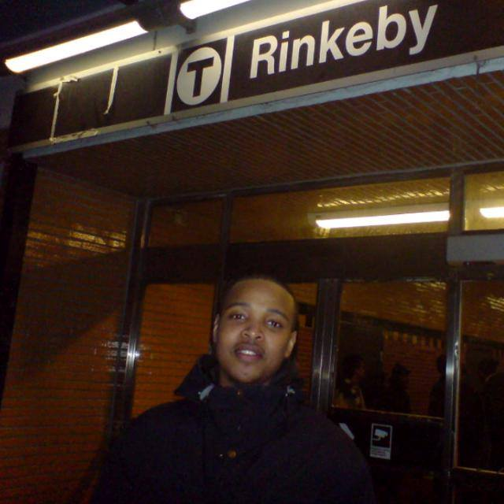

I'm Adnan.
a programmer


Hello.
I am an Ios and Web Developer. I love Coffe.
My Skills.
Books and Teaching
The complete iOS App development bootcamp. The complete Web development bootcamp
Juventus
Juventus Football Club S.p.A. (from Latin: iuventūs, "youth"; Italian pronunciation: [juˈvɛntus]), colloquially known as Juve (pronounced [ˈjuːve]),[5] is an Italian professional football club in Turin, Piedmont. Founded in 1897 by a group of Torinese students.